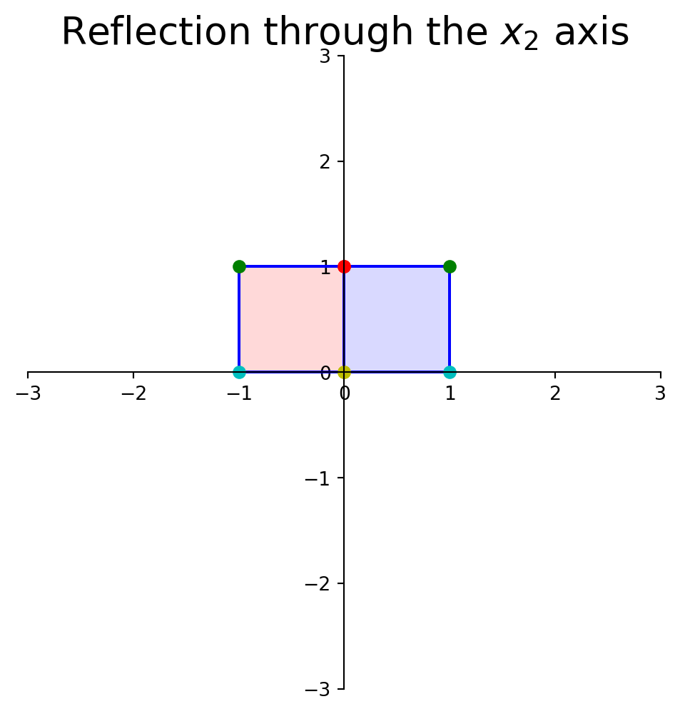
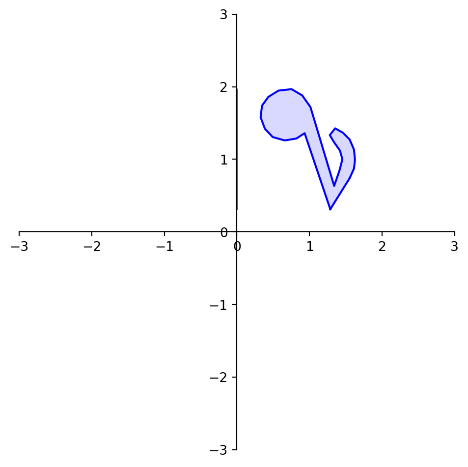

The Matrix of a Linear Transformation
Many parts of this page are based on Linear Algebra and its Applications, by David C. Lay
In the last lecture we introduced the idea of a linear transformation:

We have seen that every matrix multiplication is a linear transformation from vectors to vectors.
But, are there any other possible linear transformations from vectors to vectors?
No.
In other words, the reverse statement is also true:
every linear transformation from vectors to vectors is a matrix multiplication.
We’ll now prove this fact.
We’ll do it constructively, meaning we’ll actually show how to find the matrix corresponding to any given linear transformation \(T\).
Theorem. Let \(T: \mathbb{R}^n \rightarrow \mathbb{R}^m\) be a linear transformation. Then there is (always) a unique matrix \(A\) such that:
\[ T({\bf x}) = A{\bf x} \;\;\; \text{for all}\; {\bf x} \in \mathbb{R}^n.\]
In fact, \(A\) is the \(m \times n\) matrix whose \(j\)th column is the vector \(T({\bf e_j})\), where \({\bf e_j}\) is the \(j\)th column of the identity matrix in \(\mathbb{R}^n\):
\[A = \left[T({\bf e_1}) \dots T({\bf e_n})\right].\]
\(A\) is called the standard matrix of \(T\).
Proof. Write
\[{\bf x} = I{\bf x} = \left[{\bf e_1} \dots {\bf e_n}\right]\bf x\]
\[ = x_1{\bf e_1} + \dots + x_n{\bf e_n}.\]
In other words, for any \(\mathbf{x}\), we can always expand it as:
\[ \mathbf{x} \;= \;\;\;\;\; \begin{bmatrix} 1 & 0 & \dots & 0 \\ 0 & 1 & \dots & 0\\ \vdots & \vdots & \ddots & \vdots\\ 0 & 0 & \dots & 1 \end{bmatrix} \; \begin{bmatrix}x_1\\x_2\\ \vdots \\ x_n\end{bmatrix} \;\;\;\;\;= \;\;\;\;\; \begin{bmatrix} x_1 \\ 0 \\ \vdots \\ 0 \end{bmatrix} + \begin{bmatrix} 0 \\ x_2 \\ \vdots \\ 0 \end{bmatrix} + \dots + \begin{bmatrix} 0 \\ 0 \\ \vdots \\ x_n \end{bmatrix} \]
Because \(T\) is linear, we have:
\[ T({\bf x}) = T(x_1{\bf e_1} + \dots + x_n{\bf e_n})\]
\[ = x_1T({\bf e_1}) + \dots + x_nT({\bf e_n})\]
\[ = \left[T({\bf e_1}) \dots T({\bf e_n})\right] \, \left[\begin{array}{r}x_1\\\vdots\\x_n\end{array}\right] = A{\bf x}.\]
So … we see that the ideas of matrix multiplication and linear transformation are essentially equivalent when applied to vectors.
Every matrix multiplication is a linear transformation, and every linear transformation from vectors to vectors is a matrix multiplication.
However, term linear transformation focuses on a property of the mapping, while the term matrix multiplication focuses on how such a mapping is implemented.
This proof shows us an important idea:
To find the standard matrix of a linear transformation, ask what the transformation does to the columns of \(I\).
In other words, if \(T(\mathbf{x}) = A\mathbf{x}\), then:
\[A = \left[T({\bf e_1}) \dots T({\bf e_n})\right].\]
This gives us a way to compute the standard matrix of a transformation.
Now, in \(\mathbb{R}^2\), \(I = \left[\begin{array}{cc}1&0\\0&1\end{array}\right]\). So:
\[\mathbf{e_1} = \left[\begin{array}{c}1\\0\end{array}\right]\;\;\text{and}\;\;\mathbf{e_2} = \left[\begin{array}{c}0\\1\end{array}\right].\]
So to find the matrix of any given linear transformation of vectors in \(\mathbb{R}^2\), we only have to know what that transformation does to these two points:
This is a hugely powerful tool.
Let’s say we start from some given linear transformation; we can use this idea to find the matrix that implements that linear transformation.
For example, let’s consider rotation about the origin as a kind of transformation.

First things first: Is rotation a linear transformation?
Recall that a for a transformation to be linear, it must be true that \(T(\mathbf{u} + \mathbf{v}) = T(\mathbf{u}) + T(\mathbf{v}).\)
I’m going to show you a “geometric proof.”
This figure shows that “the rotation of \(\mathbf{u+v}\) is the sum of the rotation of \(\mathbf{u}\) and the rotation of \(\mathbf{v}\)”.
OK, so rotation is a linear transformation.
Let’s see how to compute the linear transformation that is a rotation.
Specifically: Let \(T: \mathbb{R}^2 \rightarrow \mathbb{R}^2\) be the transformation that rotates each point in \(\mathbb{R}^2\) about the origin through an angle \(\theta\), with counterclockwise rotation for a positive angle.
Let’s find the standard matrix \(A\) of this transformation.
Solution. The columns of \(I\) are \({\bf e_1} = \left[\begin{array}{r}1\\0\end{array}\right]\) and \({\bf e_2} = \left[\begin{array}{r}0\\1\end{array}\right].\)
Referring to the diagram below, we can see that \(\left[\begin{array}{r}1\\0\end{array}\right]\) rotates into \(\left[\begin{array}{r}\cos\theta\\\sin\theta\end{array}\right],\) and \(\left[\begin{array}{r}0\\1\end{array}\right]\) rotates into \(\left[\begin{array}{r}-\sin\theta\\\cos\theta\end{array}\right].\)
So by the Theorem above,
\[ A = \left[\begin{array}{rr}\cos\theta&-\sin\theta\\\sin\theta&\cos\theta\end{array}\right].\]
To demonstrate the use of a rotation matrix, let’s rotate the following shape:
dm.plotSetup()
note = dm.mnote()
dm.plotShape(note)The variable note is a array of 26 vectors in \(\mathbb{R}^2\) that define its shape.
In other words, it is a 2 \(\times\) 26 matrix.
To rotate note we need to multiply each column of note by the rotation matrix \(A\).
In Python this can be performed using the @ operator.
That is, if A and B are matrices,
A @ B
will multiply A by every column of B, and the resulting vectors will be formed into a matrix.
dm.plotSetup()
angle = 90
theta = (angle/180) * np.pi
A = np.array(
[[np.cos(theta), -np.sin(theta)],
[np.sin(theta), np.cos(theta)]])
rnote = A @ note
dm.plotShape(rnote)Geometric Linear Transformations of \(\mathbb{R}^2\)
Let’s use our understanding of how to construct linear transformations to look at some specific linear transformations of \(\mathbb{R}^2\) to \(\mathbb{R}^2\).
First, let’s recall the linear transformation
\[T(\mathbf{x}) = r\mathbf{x}.\]
With \(r > 1\), this is a dilation. It moves every vector further from the origin.
Let’s say the dilation is by a factor of 2.5.
To construct the matrix \(A\) that implements this transformation, we ask: where do \({\bf e_1}\) and \({\bf e_2}\) go?

Under the action of \(A\), \(\mathbf{e_1}\) goes to \(\left[\begin{array}{c}2.5\\0\end{array}\right]\) and \(\mathbf{e_2}\) goes to \(\left[\begin{array}{c}0\\2.5\end{array}\right]\).
So the matrix \(A\) must be \(\left[\begin{array}{cc}2.5&0\\0&2.5\end{array}\right]\).
Let’s test this out:
square = np.array(
[[0,1,1,0],
[1,1,0,0]])
A = np.array(
[[2.5, 0],
[0, 2.5]])
display(Latex(rf"$A = {ltx_array_fmt(A, '{:1.1f}')}$"))
dm.plotSetup()
dm.plotSquare(square)
dm.plotSquare(A @ square,'r')\(A = \begin{bmatrix} 2.5 & 0.0\\ 0.0 & 2.5 \end{bmatrix}\)
dm.plotSetup(-7,7,-7, 7)
dm.plotShape(note)
dm.plotShape(A @ note,'r')OK, now let’s reflect through the \(x_1\) axis. Where do \({\bf e_1}\) and \({\bf e_2}\) go?

A = np.array(
[[1, 0],
[0, -1]])
display(Latex(rf"$A = {ltx_array_fmt(A, '{:d}')}$"))
dm.plotSetup()
dm.plotSquare(square)
dm.plotSquare(A @ square,'r')
plt.title(r'Reflection through the $x_1$ axis', size = 20);\(A = \begin{bmatrix} 1 & 0 \\ 0 & -1 \end{bmatrix}\)
dm.plotSetup()
dm.plotShape(note)
dm.plotShape(A @ note,'r')What about reflection through the \(x_2\) axis?
\(A = \begin{bmatrix} -1 & 0 \\ 0 & 1 \end{bmatrix}\)

What about reflection through the line \(x_1 = x_2\)?
\(A = \begin{bmatrix} 0 & 1 \\ 1 & 0 \end{bmatrix}\)

What about reflection through the line \(x_1 = -x_2\)?
\(A = \begin{bmatrix} 0 & -1 \\ -1 & 0 \end{bmatrix}\)

What about reflection through the origin?
\(A = \begin{bmatrix} -1 & 0 \\ 0 & -1 \end{bmatrix}\)
\(A = \begin{bmatrix} 0.45 & 0.00\\ 0.00 & 1.00 \end{bmatrix}\)
\(A = \begin{bmatrix} 1.0 & 0.0\\ -1.5 & 1.0 \end{bmatrix}\)
Now let’s look at a particular kind of transformation called a projection.
Imagine we took any given point and ‘dropped’ it onto the \(x_1\)-axis.
\(A = \begin{bmatrix} 1 & 0 \\ 0 & 0 \end{bmatrix}\)

What happens to the shape of the point set?
\(A = \begin{bmatrix} 0 & 0 \\ 0 & 1 \end{bmatrix}\)


Area is Scaled by the Determinant
Notice that in some of the transformations above, the “size” of a shape grows or shrinks.
Let’s look at how area (or volume) of a shape is affected by a linear transformation.
\(A = \begin{bmatrix} 0 & 0 \\ 0 & 1 \end{bmatrix}\)
In this transformation, each unit of area in the blue shape is transformed to a smaller region in the red shape.
So to understand how area changes, it suffices to ask what happens to the unit square (or hypercube):
Let’s denote the matrix of our linear transformation as:
\[ A = \begin{bmatrix} a & b \\ c & d \end{bmatrix} \]
Then, here is what happens to the unit square:
Now, let’s determine the area of the blue diamond in terms of \(a, b, c\), and \(d\).
To do that, we’ll use this diagram:
Each of the triangles and rectangles has an area we can determine in terms of \(a, b, c\) and \(d\).
The large rectangle has sides \((a+b)\) and \((c+d)\), so its area is:
\[ (a+b)(c+d) = ac + ad + bc + bd. \]
From this large rectangle we need to subtract:
- \(bd\) (red triangles),
- \(ac\) (gray triangles), and
- \(2bc\) (green rectangles).
So the area of the blue diamond is:
\[ (ac + ad + bc + bd) - (bd + ac + 2bc) \]
\[ = ad - bc \]
So we conclude that when we use a linear transformation
\[ A = \begin{bmatrix} a & b \\ c & d \end{bmatrix} \]
the area of a unit square (or any shape) is scaled by a factor of \(ad - bc\).
This quantity is a fundamental property of the matrix \(A\).
So, we give it a name: it is the determinant of \(A\).
We denote it as
\[\det(A)\]
So, for a \(2\times 2\) matrix \(A = \begin{bmatrix} a & b \\ c & d \end{bmatrix}\),
\[\det(A) = ad-bc.\]
However, the determinant can be defined for any \(n\times n\) (square) matrix.
For a square matrix \(A\) larger than \(2\times 2\), the determinant tells us how the volume of a unit (hyper)cube is scaled when it is linearly transformed by \(A\).
We will learn how to compute determinants for larger matrices in a later lecture.
There are important cases in which the determinant of a matrix is zero.
When does it happen that \(\det(A) = 0\)?
Consider when \(A\) is the matrix of a projection:
\(A = \begin{bmatrix} 1 & 0 \\ 0 & 0 \end{bmatrix}\)
The unit square has been collapsed onto the \(x\)-axis, resulting in a shape with area of zero.
This is confirmed by the determinant, which is
\[ \det\left(\begin{bmatrix}1 & 0 \\ 0 & 0\end{bmatrix}\right) = (1 \cdot 0) - (0 \cdot 0) = 0.\]
Existence and Uniqueness
Notice that some of these transformations map multiple inputs to the same output, and some are incapable of generating certain outputs.
For example, the projections above can send multiple different points to the same point.
We need some terminology to understand these properties of linear transformations.
Definition. A mapping \(T: \mathbb{R}^n \rightarrow \mathbb{R}^m\) is said to be onto \(\mathbb{R}^m\) if each \(\mathbf{b}\) in \(\mathbb{R}^m\) is the image of at least one \(\mathbf{x}\) in \(\mathbb{R}^n\).
In other words, \(T\) is onto if every element of its codomain is in its range.
Another (important) way of thinking about this is that \(T\) is onto if there is a solution \(\mathbf{x}\) of
\[T(\mathbf{x}) = \mathbf{b}\]
for all possible \(\mathbf{b}.\)
This is asking an existence question about a solution of the equation \(T(\mathbf{x}) = \mathbf{b}\) for all \(\mathbf{b}.\)
Here, we see that \(T\) maps points in \(\mathbb{R}^2\) to a plane lying within \(\mathbb{R}^3\).
That is, the range of \(T\) is a strict subset of the codomain of \(T\).
So \(T\) is not onto \(\mathbb{R}^3\).

In this case, for every point in \(\mathbb{R}^2\), there is an \(\mathbf{x}\) that maps to that point.
So, the range of \(T\) is equal to the codomain of \(T\).
So \(T\) is onto \(\mathbb{R}^2\).
Here is an example of the reflection transformation. The red points are the images of the blue points.
What about this transformation? Is it onto \(\mathbb{R}^2\)?
Here is an example of the projection transformation. The red points (which all lie on the \(x\)-axis) are the images of the blue points.
What about this transformation? Is it onto \(\mathbb{R}^2\)?

Definition. A mapping \(T: \mathbb{R}^n \rightarrow \mathbb{R}^m\) is said to be one-to-one if each \(\mathbf{b}\) in \(\mathbb{R}^m\) is the image of at most one \(\mathbf{x}\) in \(\mathbb{R}^n\).
If \(T\) is one-to-one, then for each \(\mathbf{b},\) the equation \(T(\mathbf{x}) = \mathbf{b}\) has either a unique solution, or none at all.
This is asking a uniqueness question about a solution of the equation \(T(\mathbf{x}) = \mathbf{b}\) for all \(\mathbf{b}\).
Image from Linear Algebra and its Applications, by David C. Lay

Let’s examine the relationship between these ideas and some previous definitions.
If for all \(\mathbf{b}\), \(A\mathbf{x} = \mathbf{b}\) is consistent, is \(T(\mathbf{x}) = A\mathbf{x}\) onto? one-to-one?
- \(T(\mathbf{x})\) is onto. \(T(\mathbf{x})\) may or may not be one-to-one. If the system has multiple solutions for some \(\mathbf{b}\), \(T(\mathbf{x})\) is not one-to-one.
If for all \(\mathbf{b}\), \(A\mathbf{x} = \mathbf{b}\) is consistent and has a unique solution, is \(T(\mathbf{x}) = A\mathbf{x}\) onto? one-to-one?
- Yes to both.
If it is not the case that for all \(\mathbf{b}\), \(A\mathbf{x} = \mathbf{b}\) is consistent, is \(T(\mathbf{x}) = A\mathbf{x}\) onto? one-to-one?
- \(T(\mathbf{x})\) is not onto. \(T(\mathbf{x})\) may or may not be one-to-one.
If \(T(\mathbf{x}) = A\mathbf{x}\) is onto, is \(A\mathbf{x} = \mathbf{b}\) consistent for all \(\mathbf{b}\)? Is the solution unique for all \(\mathbf{b}\)?
- \(A\mathbf{x} = \mathbf{b}\) is consistent for all \(\mathbf{b}\). The solution may not be unique for any \(\mathbf{b}\).
If \(T(\mathbf{x}) = A\mathbf{x}\) is one-to-one, is \(A\mathbf{x} = \mathbf{b}\) consistent for all \(\mathbf{b}\)? Is the solution unique for all \(\mathbf{b}\)?
- \(A\mathbf{x} = \mathbf{b}\) may or may not be consistent for all \(\mathbf{b}\). For any \(\mathbf{b}\), if there is a solution, it is unique.